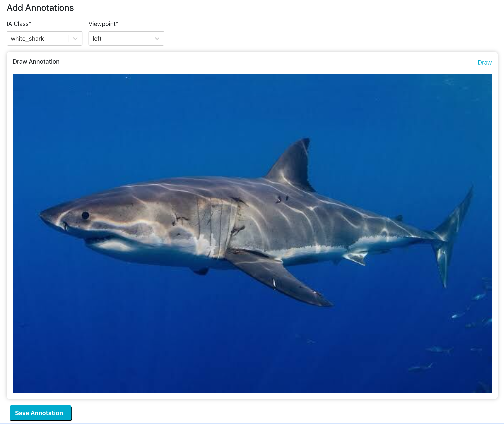

Manual Annotation#
On an Encounter page, you may see that an image does not have an Annotation bounding box around an animal in the picture. This means the animal was not recognized during detection.
Understanding the Manual Annotation Page#
The Manual Annotation page has the following sections:

Creating a Manual Annotation#
IA Class defines the type of animal or feature that represents the Annotation. This is a fixed list per species that corresponds to detection classes returned by the Image Analysis pipeline.
Animal (ex: turtle_green, whale_orca): Select all visible parts of the body in one Annotation.
Animal+body part (ex: turtle_green+head, whale_orca+fin_dorsal): Select only the body part used for identification, such as the head, dorsal fin, fluke, etc.
If there are multiple animals in your photo or multiple IA Classes you want to annotate, add them later. Only one Annotation can be created at a time.
In Viewpoint, choose the primary viewpoint that the photographer is observing the animal from, such as the animal’s left, the animal’s right, looking down at the animal, looking up at its belly, etc. Note that for salamanders and newts in Amphibian and Reptile Wildbook only, up is used when looking down at the animal from above. For mantas in MantaMatcher, use down when looking at its belly.
In Draw Annotation:
Hold left-click with your mouse to start drawing the Annotation.
Click Delete if you made a mistake and want to redraw the Annotation.
If your animal is positioned at an angle, you can rotate the Annotation box by clicking on its border and using the handle to adjust its position. Make sure that the handle of the Annotation box is closest to the head or the direction of travel.
Click Save Annotation when you’re done. A confirmation page will appear with a link back to the Encounter page.
Note
When annotating multiple animals in a photo, Wildbook may clone this Encounter if another Annotation is already on this image. Two Annotations in one image generally means that two animals are present and at least two Encounters (one animal at a location and date) must exist.
Navigate back to the Encounter page and add new Annotations if needed, or click start match to begin the identification pipeline for this new Annotation.
Troubleshooting#
How do I fix an Annotation?#
Click on the Annotation and then click on the pencil icon that appears. This opens the Edit Annotations page where you can resize or rotate the Annotation using the handle and anchors on the Annotation box. Click on the Annotation if the anchors aren’t visible.
How do I delete an Annotation?#
How do I annotate a part of an individual (Ex. head, tail, etc.)?#
When selecting the Annotation’s IA Class, look for the species, plus the part symbol ‘+’. For example, if you would like to annotate green turtle heads, search ‘turtle_green+head’.
How do I associate a part with the body in my Encounter?#
For a new Annotation:
From the Encounter you want to add a part to, select the image you want to annotate and then click Add Annotation.
Complete the steps above for adding a new Annotation, making sure to select the IA Class that includes the body part.
If the species of the body and the species of the part are the same, the Annotations will both be associated with the same Encounter. If they are not:
Delete your newly created part Annotation by deleting the new Encounter created.
Return to your original Encounter. Create a new Annotation for the body with the correct species.
Delete the previous body Annotation.
Create a new part Annotation.